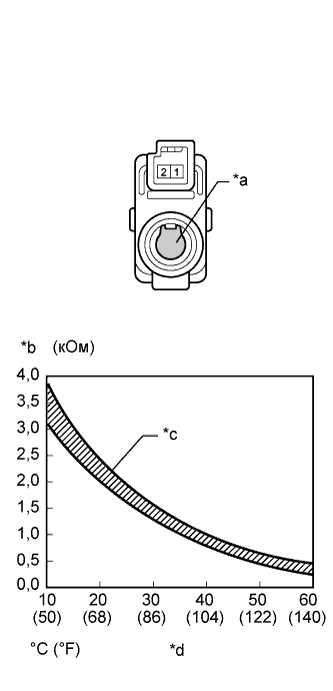

DTC B1411/11 Цепь датчика температуры в салоне |
| Код DTC | Условие обнаружения DTC | Неисправный участок |
| B1411/11 | Обрыв или короткое замыкание в цепи термистора системы кондиционирования (датчика температуры в салоне). |
|
| 1.СНИМИТЕ ПОКАЗАНИЯ ПОРТАТИВНОГО ДИАГНОСТИЧЕСКОГО ПРИБОРА (ДАТЧИК ТЕМПЕРАТУРЫ В САЛОНЕ) |
В режиме Data List проверьте работоспособность термистора системы кондиционирования (датчика температуры в салоне) (Нажмите здесь).
| Информация на дисплее прибора | Измеряемая величина / диапазон измерения | Нормальное состояние | Замечание по диагностике |
| Room Temperature Sensor | Термистор системы кондиционирования (датчик температуры в салоне) / Мин.: -6,5°C (20,3°F) Макс.: 57,25°C (135,05°F) | Отображается фактическая температура в зоне передних сидений салона | Обрыв в цепи: -6,5°C (20,3°F). Короткое замыкание в цепи: 57,25°C (135,05°F). |
| Результат | Следующий шаг |
| ОК (при поиске неисправностей по таблице признаков неисправностей) | А |
| ОК (при поиске неисправностей по DTC) | B |
| NG | C |
|
| ||||
|
| ||||
| А | ||
| ||
| 2.ПРОВЕРЬТЕ ТЕРМИСТОР СИСТЕМЫ КОНДИЦИОНИРОВАНИЯ (ДАТЧИК ТЕМПЕРАТУРЫ В САЛОНЕ) |
|  |
Снимите термистор системы кондиционирования (датчик температуры в салоне) (Нажмите здесь).
Измерьте сопротивление в соответствии со значениями, приведенными в таблице ниже.
| Контакты для подключения диагностического прибора | Условие | Заданные условия |
| 1 - 2 | 10°C (50°F) | 3,00-3,73 кОм |
| 15°C (59°F) | 2,45-2,88 кОм | |
| 20°C (68°F) | 1,95-2,30 кОм | |
| 25°C (77°F) | 1,60-1,80 кОм | |
| 30°C (86°F) | 1,28 - 1,47 кОм | |
| 35°C (95°F) | 1,00 - 1,22 кОм | |
| 40°C (104°F) | 0,80 - 1,00 кОм | |
| 45°C (113°F) | 0,65 - 0,85 кОм | |
| 50°C (122°F) | 0,50 - 0,70 кОм | |
| 55°C (131°F) | 0,44 - 0,60 кОм | |
| 60°C (140°F) | 0,36 – 0,50 кОм |
| *a | Чувствительный элемент |
| *b | Сопротивление |
| *c | Допустимый диапазон |
| *d | Температура |
|
| ||||
| OK | |
| 3.ПРОВЕРЬТЕ ЖГУТ ПРОВОДОВ И РАЗЪЕМ (ДАТЧИК ТЕМПЕРАТУРЫ В САЛОНЕ – БЛОК УПРАВЛЕНИЯ СИСТЕМОЙ КОНДИЦИОНИРОВАНИЯ) |
Отсоедините разъем G27 датчика.
Отсоедините разъем G25 блока управления.
Измерьте сопротивление в соответствии со значениями, приведенными в таблице ниже.
| Контакты для подключения диагностического прибора | Условие | Заданные условия |
| G27-1 - G25-29 (TR) | Всегда | Менее 1 Ом |
| G27-2 - G25-34 (SG-1) | ||
| G25-29 (TR) - масса | Всегда | 10 кОм или более |
| G25-34 (SG-1) - масса |
|
| ||||
| OK | ||
| ||